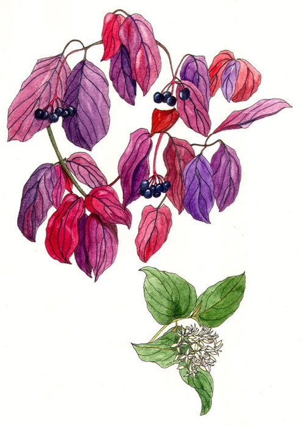

Haquedi
dopant (absorption directe) - 10 po
↪ plante - plaine - été
↪ plante - plaine - été
 Cette plante possède de petites feuilles qui changent de couleur suivant les saisons, passant du vert au printemps, au rouge à la fin de l'été, puis à une couleur café en automne. C'est durant les 2 mois les plus chauds de l'été que sortent ses fruits de la taille d'un cassis. L'haquedi est une plante particulièrement réputée chez les rôdeurs et les druides qui s'en servent pour amadouer les animaux sauvages, tout en veillant de près à ce qu'on n'en abuse pas car l'haquedi a tendance à se faire de plus en plus rare au fil des années.
Cette plante possède de petites feuilles qui changent de couleur suivant les saisons, passant du vert au printemps, au rouge à la fin de l'été, puis à une couleur café en automne. C'est durant les 2 mois les plus chauds de l'été que sortent ses fruits de la taille d'un cassis. L'haquedi est une plante particulièrement réputée chez les rôdeurs et les druides qui s'en servent pour amadouer les animaux sauvages, tout en veillant de près à ce qu'on n'en abuse pas car l'haquedi a tendance à se faire de plus en plus rare au fil des années.
Toute personne qui tente un jet Sagesse (Dressage) sur un animal qui a mangé des baies d'haquedi moins d'une heure avant gagne un bonus de +1.

Illustration reproduite avec l'aimable autorisation de Christine Achard
Illustration reproduite avec l'aimable autorisation de Christine Achard
Recueil des plantes d´AideDD